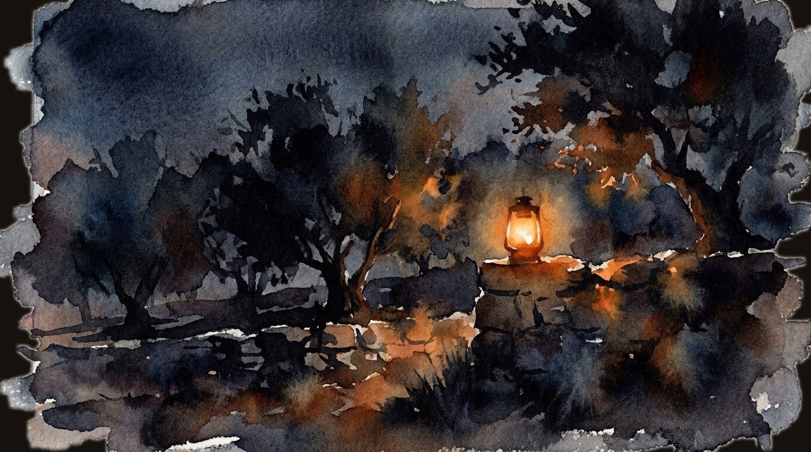
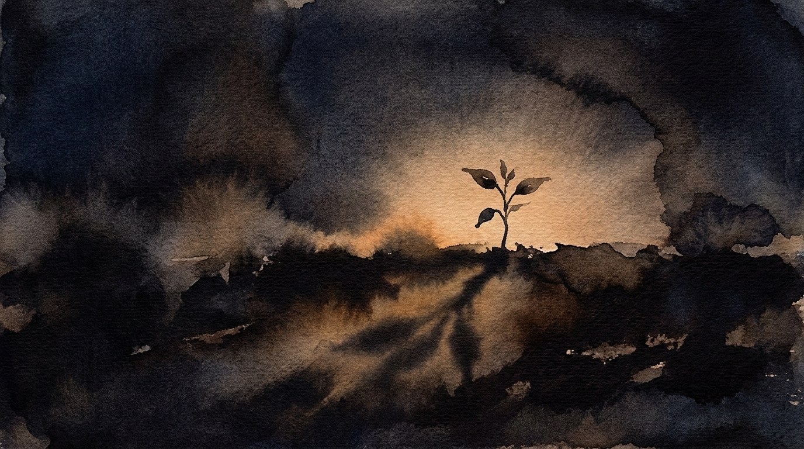
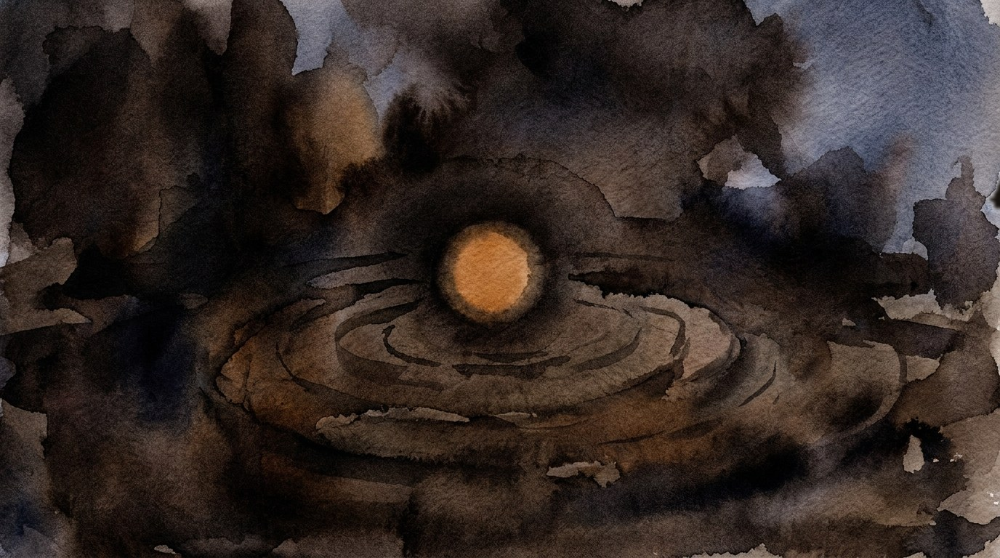
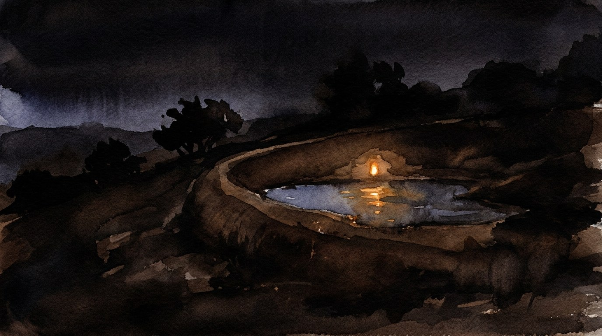
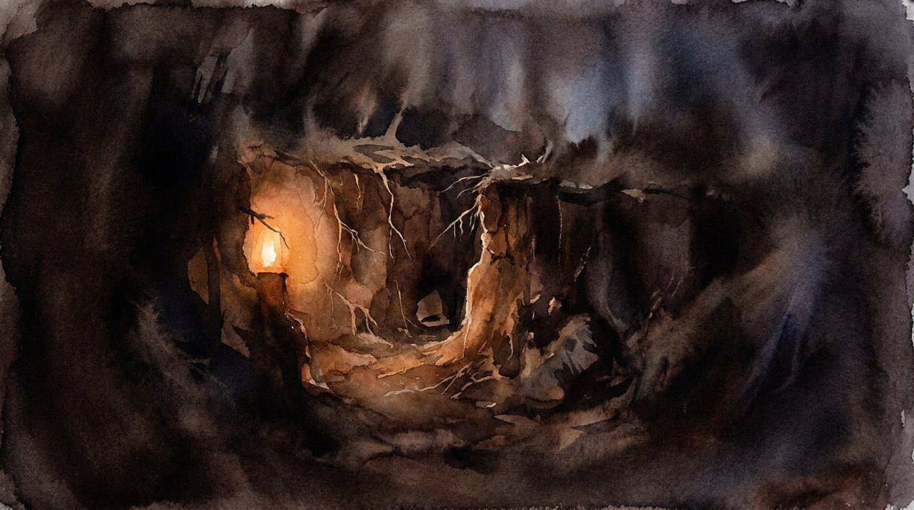
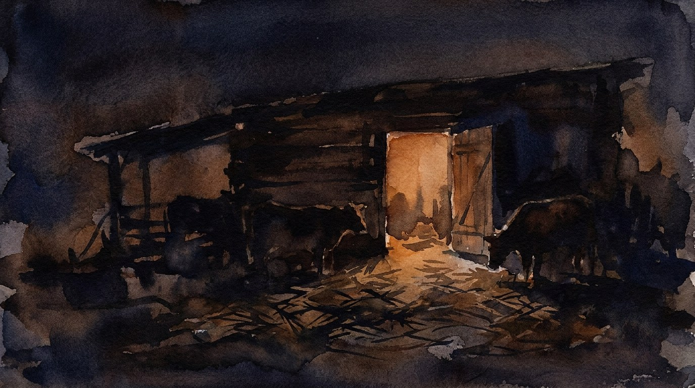
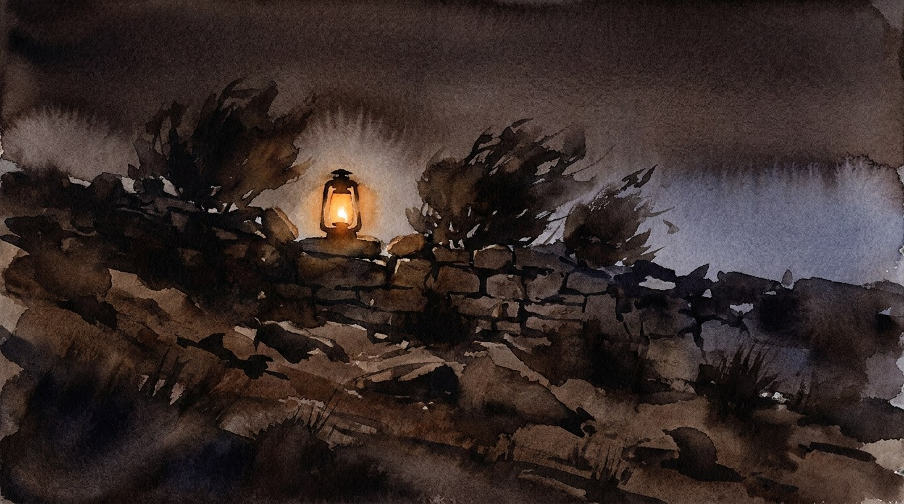
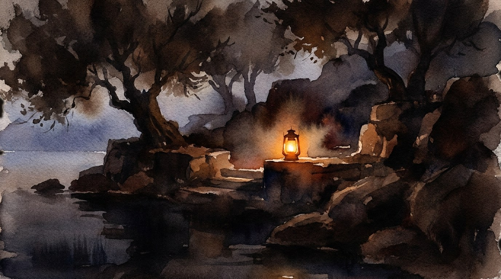

Mantra Field Books · No. 5
Where it came from, what it actually says, what the evidence now shows, and what any of it means on limestone with four months of no rain.
Permaculture has a problem that its enthusiasts rarely name: it is a design system with an unusually confident vocabulary and, for most of its life, almost no data. For forty years you could read a shelf of books telling you what a food forest yields and find that not one of them had measured it.
That changed recently, and it changed in permaculture's favour — which is exactly why the change is worth writing about carefully rather than triumphantly. This book takes the movement seriously enough to check it.
It also has a specific location in mind. Most permaculture writing in English assumes a temperate climate with rain distributed through the year. I am writing from Croatia, and the ground I care about is Dalmatian karst: limestone, thin soil, a hard bora wind, four rainless summer months, and fire. Almost every standard technique needs adjusting before it works here, and chapter nine is about how.
Not a design course, and not a substitute for standing on your own land through four seasons before you move any soil. The most important instruction in permaculture is observe first, and no book can do that part for you.
Chapter one
Mollison, Holmgren, and a word made out of two other words.

The word is a compression of permanent agriculture, later widened to permanent culture once it became clear that the ideas were not only about farming.
Bill Mollison (1928–2016) was a Tasmanian with an unusual working life behind him — bushman, fisherman, trapper, then wildlife biologist and lecturer — and a settled fury about what industrial agriculture was doing to the land he had spent decades watching. David Holmgren (born 1955) was his student, methodical where Mollison was volcanic. Their collaboration in the mid-1970s produced Permaculture One in 1978.
Almost none of the individual techniques. Mulching, composting, contour planting, tree crops, mixed polyculture — all of it existed, much of it for centuries.
What was new was the framing: treat a farm or a garden as a designed system whose elements are placed according to their relationships rather than by convention. Where does the water go. What is uphill of what. Which element's output is another element's input. That is a systems-thinking move applied to land, and applied consistently it does produce different arrangements than habit does.
Mollison's Permaculture: A Designers' Manual (1988) remains the movement's central text — enormous, encyclopaedic, opinionated, and impatient with anybody who wanted evidence. He was openly hostile to academic agriculture, which had consequences discussed in chapter ten.
Holmgren went the other way. Permaculture: Principles & Pathways Beyond Sustainability (2002) sets out the twelve principles most people now learn, and is more careful, more systemic and considerably less certain. If you read one, read Holmgren; if you want the encyclopaedia, Mollison.
Chapter two
Smith, Howard, Yeomans, Fukuoka — most of it was already there.
A movement that tells you to observe before acting should be able to look at its own genealogy. Permaculture's is well documented and is often skipped in courses, which does the students no favours — the ancestors are frequently clearer than their descendants.
An American geographer who looked at eroding hillsides and argued that steep land should carry trees whose crops feed animals and people — chestnut, oak, honey locust, carob, mulberry — rather than annual grain. His subtitle is where the word permaculture ultimately comes from. Almost everything the modern food forest claims is in this book, written half a century earlier.
A British agricultural scientist working in India who systematised aerobic composting into a repeatable method, and argued in An Agricultural Testament (1940) that soil fertility, plant health, animal health and human health form one chain. The organic movement descends from him directly. So does every compost heap turned on a schedule.
An Australian mining engineer who worked out, from reading the shape of land, how to move water across a landscape rather than down it. His keyline system identifies the point where a valley's slope changes and lays out cultivation and dams relative to it, so that runoff is spread from wet valleys toward dry ridges instead of concentrating and cutting.
Yeomans is the most technically rigorous ancestor and the most underused. If you have real slope, read him before you read anything about swales.
A Japanese microbiologist turned farmer who arrived at what he called natural farming: no tillage, no fertiliser, no pesticide, no weeding, seed sown in clay pellets into standing cover. He is philosophically the opposite of Mollison — where permaculture designs, Fukuoka subtracts, asking of every practice whether it could simply be stopped.
The honest caveat: his method was tuned over decades to one climate, one soil and one pair of hands. Attempts to transplant it directly have often failed, and that failure is instructive rather than embarrassing.
Permaculture's real contribution is synthesis and transmission — it took scattered work and made a teachable design language, and then a global network to teach it. That is a genuine achievement. It is a smaller and more defensible claim than the one sometimes made, and stating it accurately protects the movement from the charge that it renamed other people's work.
Chapter three
Stated, then examined for what they actually commit you to.
The third is the one that has drifted. Mollison's original formulation was blunter and included setting limits to population and consumption; the softer "fair share" is a later gloss. The drift is worth noticing, because the harder version is a real constraint and the softer one can be satisfied by giving away courgettes.
| # | Principle | What it means on the ground |
|---|---|---|
| 1 | Observe and interact | A year of watching before earthworks. The most-cited and least-obeyed. |
| 2 | Catch and store energy | Water, sunlight, biomass, fertility — hold it before it leaves. |
| 3 | Obtain a yield | A system that feeds nobody is a hobby. Chapter ten takes this literally. |
| 4 | Apply self-regulation and accept feedback | Notice failure early rather than defend the design. |
| 5 | Use and value renewable resources | Prefer what regrows to what depletes. |
| 6 | Produce no waste | Every output is somebody's input, or it is a problem. |
| 7 | Design from patterns to details | Get the water and the layout right before choosing cultivars. |
| 8 | Integrate rather than segregate | Placement is the design. Proximity does the work. |
| 9 | Use small and slow solutions | The most reliably correct one. Small failures are survivable. |
| 10 | Use and value diversity | Insurance, not decoration. |
| 11 | Use edges, value the marginal | Boundaries are the most productive zones in most ecosystems. |
| 12 | Creatively use and respond to change | The design is a hypothesis, not a plan. |
They are broad enough to justify almost any decision after the fact. "Use small and slow solutions" and "creatively respond to change" can each be invoked to defend opposite choices, which makes them poor at settling arguments — and settling arguments is what a design framework is for. They work best as a checklist for noticing what you have forgotten, and worst as a rulebook. Used the second way they become a vocabulary for justifying what you were going to do anyway.
Chapter four
The one design tool that survives contact with a real site.

If you throw out everything else, keep this. Zoning is permaculture's most durable idea, it is verifiable within a season, and it is the thing most new gardeners get wrong.
The failure mode is universal and worth stating plainly: people put the herb bed at the bottom of the garden. It is a lovely spot. Nobody walks there in the rain, the herbs go to seed unpicked, and within two years the bed is a weed patch and the gardener concludes they are bad at gardening. The bed was in the wrong zone. That is all.
Zone 5 also deserves defending, because it is the first thing cut when land feels short. It is your control sample — the only way to know what your climate does without you.
Zones are about your movement; sectors are about what comes at the site regardless of you. Sun angles in summer and winter. Prevailing wind, and the damaging one, which is often a different direction. Water arriving from uphill. Frost pooling in hollows. Fire approach. Noise, dust, the neighbour's spray drift. View.
You draw them as wedges radiating across the site, and then you place things to block, filter, channel or admit each one. In Dalmatia the bora sector alone determines most of a design, and getting it wrong is not a matter of reduced yield — it is a matter of losing young trees outright.
Chapter five
Swales, keyline, ponds — and when a swale is the wrong answer.

Water is the first design decision on any site, and it is upstream of everything — soil, planting, layout, buildings. Get it wrong and you spend a decade compensating.
Slow it. Spread it. Sink it. Water leaving your land fast is carrying your soil with it and taking your fertility to somebody else's river.
A swale is a ditch dug on contour — level along its whole length — with the spoil mounded on the downhill side. Runoff collects in it, sits, and soaks in rather than running off. Trees are planted on the mound.
They are the most photographed technique in permaculture and the most misapplied. A swale is right when you have moderate slope, enough soil depth to hold water, and periodic heavy rain.
Yeomans's system works from the keypoint — the place in a valley where the steep upper slope flattens. Ploughing on lines that run slightly off contour from there moves water outward from the wet valley toward the dry ridges, drought-proofing the whole face rather than storing water in one line. It is subtler than swales, needs a decent read of the land, and does far less damage when you get it slightly wrong.
Since the fissures win, the strategy is to stop treating the rock as storage and use these instead:
Chapter six
The food web, compost, mulch, no-dig, and what the trials show.

Soil is where permaculture's claims are strongest and where the mainstream evidence is most supportive, so this chapter can be less hedged than most.
A teaspoon of healthy soil contains an enormous population of bacteria, fungi, protozoa, nematodes and arthropods. The relationship that matters most for a grower is mycorrhizal: fungi colonise plant roots, extend the effective root system far beyond what the plant could build alone, and trade water and phosphorus for sugars. This is well established, not fringe, and it explains most of what follows.
Tillage tears that network apart. Soluble fertiliser makes the plant stop paying for it. Both produce a plant dependent on the grower.
Soil carbon sequestration claims in the movement often run well ahead of the measurements. Building soil organic matter is real and valuable — for water-holding capacity, structure and fertility. Whether a given practice sequesters a given tonnage of carbon per hectare per year, permanently, is a much harder question with contested answers. Claim the agronomy, which is solid. Be careful with the climate arithmetic, which is not.
Chapter seven
Seven layers, succession, and the yields nobody measured.
The food forest is permaculture's flagship image and its most oversold product. Both halves of that sentence are true and a good practitioner holds them together.
Some versions add mycelium as an eighth, which is reasonable and slightly cheeky.
A guild is a group of plants asserted to support one another — a fruit tree with nitrogen fixers, dynamic accumulators, pest-confusing aromatics and insectary flowers around it. Some of this rests on solid ground: nitrogen fixation is real chemistry, and flowering plants genuinely bring in predatory insects.
But the specific published guild recipes are largely untested folklore, repeated from book to book without anybody running a trial. The best-known example is the "dynamic accumulator" — the claim that comfrey and certain others mine specific minerals from deep soil and concentrate them in their leaves. The mechanism is plausible. The specific mineral tables circulating in permaculture literature trace back to very thin sources and, where anyone has checked, have not held up well. Comfrey is still an excellent mulch plant. It is just not a mineral pump with a known specification.
Years one to three look like failure. Years three to seven, the shrubs and small fruit start paying. Years seven to fifteen, the canopy comes in and the system starts behaving like a system. There is no version of this that produces a serious yield in season two, and anybody selling one is selling something.
Temperate food-forest design assumes shade is the limiting factor. Here water is, and shade is an asset — so the structure inverts. Canopy exists to shade the ground and cut evaporation. Spacing is wider. Species are the ones that have been doing this here for millennia: olive, fig, almond, carob, pomegranate, grape, with rosemary, sage, lavender and thyme underneath. This is not an exotic import. It is what a Dalmatian smallholding already looked like a hundred years ago, and the honest framing is that permaculture here mostly means rebuilding what was abandoned.
Chapter eight
Chickens as tractors, and the limits of the metaphor.

Animals close loops that plants cannot. They also do not take holidays, and the second fact is the one designs underestimate.
Animals need feeding and watering every day of the year, including when you are ill, travelling or working a Nova TV shift that ends at two in the morning. The design question is not whether animals close loops — they do — but whether you or somebody reliable is physically present daily. If the answer is no, the correct design has no animals in it, and that is a competent decision rather than a failure of ambition.
Chapter nine
Designing for the Mediterranean, where the standard advice breaks.

Nearly all permaculture writing in English is temperate. Applied unmodified to Dalmatian karst it produces expensive failure, and the failures are predictable enough to list.
Limestone, fissured, with thin discontinuous soil in pockets. Water does not run across it; it disappears into it. Consequences: swales are usually pointless (chapter five), soil must be built and held rather than improved in place, and terracing is the fundamental move.
The dry, cold, violent downslope wind off the mountains, in gusts that shred foliage and snap young stems. It also strips moisture at a rate that surprises people from wetter countries.
The answer is windbreaks, and the counterintuitive part is that a permeable windbreak works better than a solid one. A wall creates violent turbulence on its lee side; a shelterbelt that lets roughly half the wind through slows it for a distance of many times its own height. This is why suhozid dry stone walls — unmortared, with gaps — are the correct traditional technology and not merely the picturesque one. They are on the UNESCO intangible heritage list, and they are engineering.
Effectively no rain for three to four months, in the hottest part of the year. Every planting decision follows from this. Autumn planting, not spring, so roots establish over the wet season. Heavy mulch. Shade as an asset. Cisterns. And species that expect it.
The condition most often left out of permaculture design entirely, and on this coast it is not optional. A dense mulched food forest full of resinous Mediterranean aromatics is, in August, fuel. Design implications: defensible space around structures, green firebreaks of low-flammability species, grazing or cutting to keep fuel loads down, water storage that is accessible for firefighting, and access tracks wide enough for a vehicle.
Olive, fig, almond, carob, pomegranate, grape, caper. Rosemary, sage, lavender, thyme, immortelle. Windbreaks of cypress or holm oak. This is not a designed polyculture invented by anyone — it is what survived here, selected over millennia by exactly the four conditions above. Start from it. Then experiment at the edges, on a small scale, and expect to lose some of the experiments.
Chapter ten
Forty years without data, and what the last decade found.
This chapter is why the book exists. Every other permaculture text will tell you the system works. Very few will tell you how anybody knows.
Mollison was openly hostile to academic agriculture, and the movement inherited that stance. The result was a decades-long separation: permaculture developed inside courses, books and demonstration sites rather than inside trials. Claims propagated by repetition. Ferguson and Lovell, in a 2013 review in Agronomy for Sustainable Development, documented this isolation from science directly — and also made an observation that stings: permaculture's techniques largely overlap with mainstream agroecology, sometimes with a distinctive vocabulary laid over them. Food forest is agroforestry. Guild is synergistic polyculture.
It is genuinely good news and it is not a vindication of everything. Eleven sites is not many. They were commercial operations, therefore self-selected for competence. Variability between sites was considerable — which the authors flagged themselves, carefully. And "comparable to conventional" is a real finding precisely because it is modest: it does not support the claim, common in the movement, that these systems dramatically outproduce conventional farming.
What it does support: a well-run permaculture site can feed people at a rate in the same range as the alternatives, while doing better on soil, water and biodiversity. That is a strong enough claim. It does not need inflating.
None of this makes permaculture wrong. It makes it a design framework with good principles, real techniques mostly borrowed from elsewhere, one decent body of yield evidence, and a culture that has historically been better at teaching than at measuring. Which is a fair description, and more use than a slogan.
Chapter eleven
One degraded plot on Otok Ugljan, and the design questions it poses.

Kukljica EcoOasis is a land restoration project on Otok Ugljan, in the Zadar archipelago, which I am developing with Toni Franović. It is the reason the previous two chapters are written the way they are.
An Adriatic island plot carries every constraint in chapter nine at once. Karst limestone with thin pocket soil. Full exposure to bora from the northeast. A rainless summer at the hottest time of year. Real fire risk in August. And — the condition specific to the islands — the whole landscape is post-abandonment. These terraces were farmed for centuries and then left when the population moved to the mainland and to tourism. What looks like wilderness is usually collapsed agriculture.
That last point changes the project's nature. This is not designing a system onto blank land. It is archaeology followed by repair: finding the old terrace lines, rebuilding the walls, identifying which of the surviving trees are abandoned cultivars rather than volunteers, and working out what the previous three generations knew before deciding what to add.
Site measurements. Plot size, aspect, exact rainfall, cistern volume, tree inventory, soil depth, the existing terrace survey. I have written the design questions because those are general; I have not invented the answers, and the numbers a real design needs are the ones Toni and I have on the ground rather than the ones I could make sound plausible here. When the survey exists, this chapter gets rewritten with figures in it. Until then it is a framework, and it says so.
Chapter twelve
What to do, in order, on a piece of land you have just got.
Do not move soil. Watch instead, and write it down.
Small and slow. Of the twelve principles it is the one that is unambiguously right, and it is the one enthusiasm most reliably overrides. Half a hectare planted well and observed carefully teaches more in three years than five hectares planted in a burst of energy and then abandoned in year two — and the second outcome is by far the more common one.
Apparatus
Including the papers, so you can check the yield claims.
Web sources consulted 20 August 2026.
House rule
Stated as plainly as what I could.